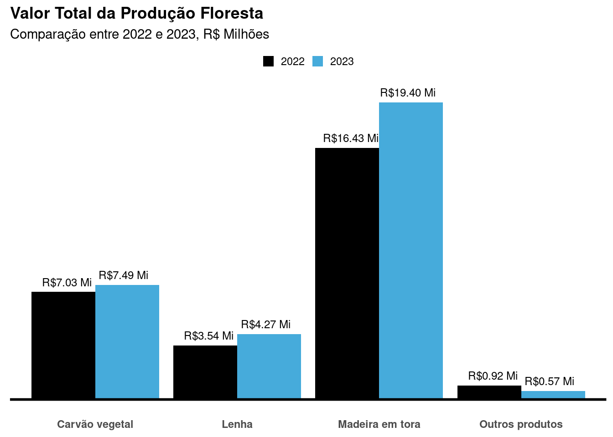

# Downloading packages -------------------------------------------------------
- Downloading sidrar from CRAN ... OK [193.1 Kb in 0.99s]
- Downloading magrittr from CRAN ... OK [226.7 Kb in 0.4s]
- Downloading httr from CRAN ... OK [453.8 Kb in 0.42s]
- Downloading curl from CRAN ... OK [760.1 Kb in 0.34s]
- Downloading openssl from CRAN ... OK [1.2 Mb in 0.4s]
- Downloading askpass from CRAN ... OK [20.9 Kb in 0.35s]
- Downloading sys from CRAN ... OK [38.6 Kb in 0.34s]
- Downloading rjson from CRAN ... OK [109.8 Kb in 0.95s]
- Downloading rvest from CRAN ... OK [287.3 Kb in 0.93s]
- Downloading selectr from CRAN ... OK [477.1 Kb in 0.69s]
- Downloading stringr from CRAN ... OK [297.1 Kb in 0.41s]
- Downloading stringi from CRAN ... OK [3 Mb in 0.35s]
- Downloading vctrs from CRAN ... OK [1.2 Mb in 0.4s]
- Downloading tibble from CRAN ... OK [656.3 Kb in 0.39s]
- Downloading fansi from CRAN ... OK [298.7 Kb in 0.41s]
- Downloading pillar from CRAN ... OK [629.4 Kb in 0.39s]
- Downloading utf8 from CRAN ... OK [142.7 Kb in 0.34s]
- Downloading pkgconfig from CRAN ... OK [17.1 Kb in 0.34s]
- Downloading xml2 from CRAN ... OK [264.7 Kb in 0.42s]
Successfully downloaded 19 packages in 13 seconds.
The following package(s) will be installed:
- askpass [1.2.1]
- curl [6.0.0]
- fansi [1.0.6]
- httr [1.4.7]
- magrittr [2.0.3]
- openssl [2.2.2]
- pillar [1.9.0]
- pkgconfig [2.0.3]
- rjson [0.2.23]
- rvest [1.0.4]
- selectr [0.4-2]
- sidrar [0.2.9]
- stringi [1.8.4]
- stringr [1.5.1]
- sys [3.4.3]
- tibble [3.2.1]
- utf8 [1.2.4]
- vctrs [0.6.5]
- xml2 [1.3.6]
These packages will be installed into "~/work/Walassseee.github.io/Walassseee.github.io/renv/library/R-4.2/x86_64-pc-linux-gnu".
# Installing packages --------------------------------------------------------
- Installing magrittr ... OK [installed binary and cached in 0.22s]
- Installing curl ... OK [installed binary and cached in 0.24s]
- Installing sys ... OK [installed binary and cached in 0.21s]
- Installing askpass ... OK [installed binary and cached in 0.21s]
- Installing openssl ... OK [installed binary and cached in 0.26s]
- Installing httr ... OK [installed binary and cached in 0.22s]
- Installing rjson ... OK [installed binary and cached in 0.21s]
- Installing stringi ... OK [installed binary and cached in 0.35s]
- Installing vctrs ... OK [installed binary and cached in 0.36s]
- Installing stringr ... OK [installed binary and cached in 0.37s]
- Installing selectr ... OK [installed binary and cached in 0.37s]
- Installing fansi ... OK [installed binary and cached in 0.21s]
- Installing utf8 ... OK [installed binary and cached in 0.22s]
- Installing pillar ... OK [installed binary and cached in 0.45s]
- Installing pkgconfig ... OK [installed binary and cached in 0.21s]
- Installing tibble ... OK [installed binary and cached in 0.49s]
- Installing xml2 ... OK [installed binary and cached in 0.34s]
- Installing rvest ... OK [installed binary and cached in 0.37s]
- Installing sidrar ... OK [installed binary and cached in 0.22s]
Successfully installed 19 packages in 6.1 seconds.# Downloading packages -------------------------------------------------------
- Downloading dplyr from CRAN ... OK [1.4 Mb in 0.39s]
- Downloading generics from CRAN ... OK [71.5 Kb in 0.39s]
- Downloading tidyselect from CRAN ... OK [216.9 Kb in 0.64s]
- Downloading withr from CRAN ... OK [214.7 Kb in 0.44s]
Successfully downloaded 4 packages in 2.5 seconds.
The following package(s) will be installed:
- dplyr [1.1.4]
- generics [0.1.3]
- tidyselect [1.2.1]
- withr [3.0.2]
These packages will be installed into "~/work/Walassseee.github.io/Walassseee.github.io/renv/library/R-4.2/x86_64-pc-linux-gnu".
# Installing packages --------------------------------------------------------
- Installing generics ... OK [installed binary and cached in 0.21s]
- Installing withr ... OK [installed binary and cached in 0.21s]
- Installing tidyselect ... OK [installed binary and cached in 0.34s]
- Installing dplyr ... OK [installed binary and cached in 0.57s]
Successfully installed 4 packages in 1.4 seconds.# Downloading packages -------------------------------------------------------
- Downloading tidyr from CRAN ... OK [1.1 Mb in 0.41s]
- Downloading purrr from CRAN ... OK [477 Kb in 0.38s]
- Downloading cpp11 from CRAN ... OK [265.4 Kb in 0.34s]
Successfully downloaded 3 packages in 1.7 seconds.
The following package(s) will be installed:
- cpp11 [0.5.0]
- purrr [1.0.2]
- tidyr [1.3.1]
These packages will be installed into "~/work/Walassseee.github.io/Walassseee.github.io/renv/library/R-4.2/x86_64-pc-linux-gnu".
# Installing packages --------------------------------------------------------
- Installing purrr ... OK [installed binary and cached in 0.35s]
- Installing cpp11 ... OK [installed binary and cached in 0.22s]
- Installing tidyr ... OK [installed binary and cached in 0.58s]
Successfully installed 3 packages in 1.2 seconds.# Downloading packages -------------------------------------------------------
- Downloading ggplot2 from CRAN ... OK [4.7 Mb in 0.35s]
- Downloading gtable from CRAN ... OK [212.2 Kb in 0.34s]
- Downloading isoband from CRAN ... OK [1.6 Mb in 0.39s]
- Downloading scales from CRAN ... OK [684.1 Kb in 0.34s]
- Downloading farver from CRAN ... OK [1.4 Mb in 0.41s]
- Downloading labeling from CRAN ... OK [58.4 Kb in 0.38s]
- Downloading munsell from CRAN ... OK [235.4 Kb in 0.39s]
- Downloading colorspace from CRAN ... OK [2.5 Mb in 0.4s]
- Downloading RColorBrewer from CRAN ... OK [51.8 Kb in 0.39s]
- Downloading viridisLite from CRAN ... OK [1.2 Mb in 0.34s]
Successfully downloaded 10 packages in 5 seconds.
The following package(s) will be installed:
- colorspace [2.1-1]
- farver [2.1.2]
- ggplot2 [3.5.1]
- gtable [0.3.6]
- isoband [0.2.7]
- labeling [0.4.3]
- munsell [0.5.1]
- RColorBrewer [1.1-3]
- scales [1.3.0]
- viridisLite [0.4.2]
These packages will be installed into "~/work/Walassseee.github.io/Walassseee.github.io/renv/library/R-4.2/x86_64-pc-linux-gnu".
# Installing packages --------------------------------------------------------
- Installing gtable ... OK [installed binary and cached in 0.36s]
- Installing isoband ... OK [installed binary and cached in 0.25s]
- Installing farver ... OK [installed binary and cached in 0.25s]
- Installing labeling ... OK [installed binary and cached in 0.21s]
- Installing colorspace ... OK [installed binary and cached in 0.32s]
- Installing munsell ... OK [installed binary and cached in 0.26s]
- Installing RColorBrewer ... OK [installed binary and cached in 0.21s]
- Installing viridisLite ... OK [installed binary and cached in 0.22s]
- Installing scales ... OK [installed binary and cached in 0.39s]
- Installing ggplot2 ... OK [installed binary and cached in 0.77s]
Successfully installed 10 packages in 3.5 seconds.The following package(s) will be installed:
- scales [1.3.0]
These packages will be installed into "~/work/Walassseee.github.io/Walassseee.github.io/renv/library/R-4.2/x86_64-pc-linux-gnu".
# Installing packages --------------------------------------------------------
- Installing scales ... OK [linked from cache]
Successfully installed 1 package in 5 milliseconds.
Attaching package: 'dplyr'The following objects are masked from 'package:stats':
filter, lagThe following objects are masked from 'package:base':
intersect, setdiff, setequal, unionWarning: Using `size` aesthetic for lines was deprecated in ggplot2 3.4.0.
ℹ Please use `linewidth` instead.